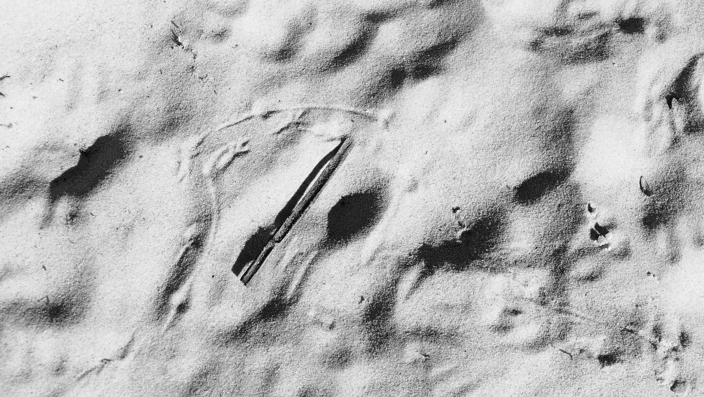

research text
oceanity in contemporary art
This research analyzes 50+ artworks by 30+ contemporary artists to investigate how art constructs oceanic thought beyond metaphor. I use the concept of oceanity to describe fluctuating ocean properties, agencies, and material states that exceed terrestrial ontology.
The framework combines deep ecology, dark ecology, and more-than-wet ontology. The ocean is approached as a hyperobject and as an epistemic field where horizon, depth, waves, lifeforms, and liquid politics are continuously reconfigured.
The study is structured through seven matrices: ontological features, horizon, depth, wave events, oceanic event geography, lifeforms/new agents, and bio-liquid politics. Contemporary art here acts as an experimental interface for perceiving what remains otherwise inaccessible in oceanic worlds.
notes
manuscript in preparation for publication
the full manuscript is currently being edited and prepared for publication.
gallery
project image source